Primal'sguidetosura
| Sura | |||||||||||||||||||
|---|---|---|---|---|---|---|---|---|---|---|---|---|---|---|---|---|---|---|---|
| [[File: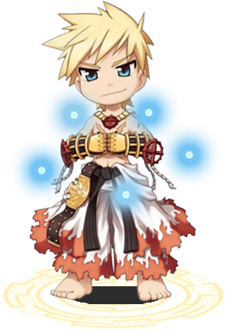|center|frameless|300x300px]] | |||||||||||||||||||
| Job Base: | Sura | ||||||||||||||||||
| Written By: | Primal fear | ||||||||||||||||||
| |||||||||||||||||||
Who am i?
Hello everyone, my name is primal fear and i play on nova RO since april 2016. I've played a lot of classes like mechanic, Rune Knight, Rebellion but my main class for pvp is sura.
Some people may know under those names : Hooligan fury, SeyrenWindsor, CecilDamon...
Acronym and vocabulary
I'll use few abreviations for this guide :
GOH = Gate of Hell (ranged dps skill)
TC = Tiger cannon (melee dps skill)
Snap = Body relocation (monk skill)
CC = Cursed circle (sura crowd control skill)
CS = Crushing strike (RK runes)
PvM = Player versus Monster
PvP = Player versus Player
RK = Rune Knight
RG = Royal Guard
EoE = Essence of Evil, a drop that give stats and goes in card slot. obtainable in temple of the demon god instance.
OGH = Old glast heim instance
Stats
Sura have a lots of builds and stats change widely. Most of the time you'll put them according to the temporal boots you use.
- STR - Your main dps stats for a lots of build, however, due to temporal boots bonus, you wont put more than 100-110
- AGI - Usefull stat for most of builds, it increase attack speed and give you ability to use skills faster (such as snap). 60-110
- VIT - Increase your HP, and status resistance such as stun. Very important stats since most of your dps skill use HP pool. 100-120
- INT - This stats is mostly to increase asura since its damage is proportional to your SP pool. 40-110
- DEX - Increase HIT and decrease cast time, also decrease delay between combo. important for TC / GOH build. 100-120
- LUK - Increase your ATK but less than STR does, 20-40
Skills
Notable Champion Skills
| Skill | Notes |
|---|---|
| Flee | Add 15 flee rate at level 10. take it at max level |
| Asura | Your most powerfull skill damage speaking. Will drain all of your SP and you wont be able to restore SP for 10s after using it. |
| Iron Hand | Add ATK if you use knuckle weapon. 10 if you use vellum claw or thanatos fist |
| Steel body | Reduce damage per 90%, good for tanking mvp in pvm, or to break emperium in bg / woe |
| Blade Stop | Use this to catch CS rune knight, or exceed break RG |
| Body relocation | You made a sura for this skill, why would i bother to explain it? :D |
| Absorb Spirit | Absorb all the spheres of a target and give you SP, Usefull when fighting other sura |
Notable Sura Skills
| Skill | Notes |
|---|---|
| Dragon Combo | You'll start combo using that skill, it have no damage tho |
| Power Absorb | Absorb all the sphere in a 5x5 area, good when dueling other Sura. |
| Fallen Empire | Your second combo skill, use it after Dragon Combo and before GOH or TC. it does reasonable damage tho |
| Crescent Elbow | Reflect melee attack with a good amount (around 130%), good when fighting CS runeknight, TC sura and Guillotine cross |
| Tiger Cannon | One of your main DPS skill, use 1/3 of your hp to do massive aoe damage (5*5), the more hp you have, the more damage you'll deal. it has bigger damage if you use it after fallen empire |
| Cursed Circle | Your main crowd control skill, block all the players in a 7x7 aoe at max level for 7s |
| Flash Combo | Proc dragon combo, fallen empire and TC in less than one second, then activate skynet blow one second later. TC damage will be normal, not increased. Unable to use potion during flash combo. |
| Gate of Hell | Your ranged damage skill. use 1/3 of your max SP to deal a great amount of damage. the less current HP you have regarding your max hp, the more damage you will deal. |
| WindMill | 5x5 Aoe with low damage that make player to sit, stun monster instead. |
| Lightning Walk | Make the next ranged attack to miss and teleport you to the aggressor. Usefull when fighting ranger or GOH sura. |
| Gentle Touch - Energy gain | You generate spheres when you deal or receive physical damage. Most of sura use this gentle touch cause it doesnt cost many skill points |
| Gentle Touch - Cure | Cure abnormal status such as frozen, curse and stun, can be used on other players |
| Gentle Touch - Change | Decrease your max HP while increasing your ATK and Aspd, can be used on other players. Use this on the dps (such as ranger) if you are in instance. |
| Gentle Touch - Revitalize | Increase your max HP per 10% at max level, Good for TC sura, but cost a lot of skills points. |
| Rising Dragon | Augment the limit of the sphere you can have to 15. Call 15 sphere and put you in critical explosion state. Raise your HP and SP pool |
PvM Guide
Leveling
1-85
That's the boring part, i recommand you to do the eden quest and farm place such as orc donjon and glast heim church with aspersio buff. Use fingers offensive skill to kill monster.
85-85 rebirth
Do both of the gramps quest, DONT get the rewards yet (you'll be 99 before finishing them). Before rebirth go make one of the 90-99 eden quest (such as turtle donjon quest).
Now you can rebirth, go kill few poring to pass acolyte, then take the reward of the eden quest : that will make you instant 50 job level.
Change job to champion and take gramps's reward, it will bring you straight to sura.
85-175
Gramps! Gramps all the way, there is no better way to level. Exept if you are rich and can afford full asura gear and tones of bloody branch to level on MVP.
The best build for gramps imo is SNAP! there is so many classes who have better dps than you and it doesnt drain their hp / sp.
Just snap over the map, make hugeee mobtrain and bring it back to your team. That will make your mates happy.
Solo leveling
You can chose to level solo and take time to learn the class before you start doing serious things.
Here is an exemple of cheap build you can make to kill tones of mobs and regenerating ur hp / sp as well :
Head : rideword hat or Vanargand Helm, middle and lower doesnt matter.
Armor : glorious suit for max HP.
Weapon : Thanatos Mace have better size bonus than knuckle, put an hunter fly card in.
Shield : Platinium shield are cheap and very usefull, provide 15% resistance to middle and large size monster.
Garment : any slotted GSS with raydric card.
Boots : Any slotted temporal vit shoes with green ferus or raydric card. You can use variant shoes or E variant shoes instead.
Accessory : doesnt matter much, best is pendant of maelstrom. Silverwork Bracelet are cheap and give nice bonus.
This equipment is for tiger cannon build cause it does massive AOE damage. Take flash combo in your build, use flash combo if you can kill the mob with a normal TC, or do a manual combo if you need more damage. Dont forget TC can be endowed!
Here you have a video of a sura leveling with TC in scaraba hole =>[1]
| Item | Type | Way to obtain | Notes |
|---|---|---|---|
 Hat [1] Hat [1]
|
Upper | Drop | Personal notes, effect of the item. |
| Card | Monster drop | Personal notes, effect of the card. |
Builds and equipments at max level
Hybrid DPS
- Equipment
Head :  Rideword Hat for regen or 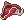 Ship Captain Hat for GoH damage or 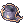 Enhanced Corsair for TC damage. EoE vit 3 is a good choice for a card.
Rideword Hat for regen or 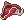 Ship Captain Hat for GoH damage or 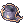 Enhanced Corsair for TC damage. EoE vit 3 is a good choice for a card.
Armor :  Glorious Suit is one of the best overall 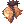 Boitata Armor [1] is very good too, add 7% neutral resistance and hp + slot
Glorious Suit is one of the best overall 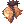 Boitata Armor [1] is very good too, add 7% neutral resistance and hp + slot
Bayani Bakunawa Scale Armor [1] is ok choice because of the +2 all stats it give. Put a peco peco card in the armor
Weapon :  Robot's Mechanical Arm [2] >
Robot's Mechanical Arm [2] >  Carga Mace [2] > 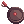 Lunakaligo [3] or
Carga Mace [2] > 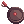 Lunakaligo [3] or  Thanatos Hammer [1] for regen. Put white knight card from OGH instance in those weapons, mixed with archer skeleton for GoH, or abysmal knight if you fight MVP.
Thanatos Hammer [1] for regen. Put white knight card from OGH instance in those weapons, mixed with archer skeleton for GoH, or abysmal knight if you fight MVP.
Shield :  +7 Mad Bunny Shield [1] is the best for DPS, coupled with Khalitzburg knight card from OGH. 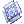 +7 Immune Shield [1] is also good for tanking.
+7 Mad Bunny Shield [1] is the best for DPS, coupled with Khalitzburg knight card from OGH. 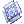 +7 Immune Shield [1] is also good for tanking.
Garment : 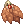 +8 - +12 Gigant Snake Skin [1] try to get a cheap one with usefull bonus (str / vit). Use raydric card
Shoes :  Temporal Boots Of Strength [1] is the best compromise between all the temporal boots, just be sure to have 120 STR base. Carded with green ferus card
Temporal Boots Of Strength [1] is the best compromise between all the temporal boots, just be sure to have 120 STR base. Carded with green ferus card
- Skill tree

- Stats
- STR 120
- AGI 100
- VIT 105
- INT 50
- DEX 100
- LUK 20
Full asura MVP
This stuff is very complex, it have to maximize your SP pool while having a great amound of ATK. With a such build you can easily reach 800k asura on any MVP.
- Equipment
Head : Any slotted hat with  Incubus Card.
Incubus Card.
Middle Headgear :  Cyclops Glasses [1] with Incubus Card, it will give +200 max SP.
Cyclops Glasses [1] with Incubus Card, it will give +200 max SP.
Lower Headgear :  Gangster Scarf
Gangster Scarf
Armor : 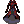 Diabolus Robe [1] with +3 STR enchant, with Spirit Decorated Tree Card from Horror toy factory instance.
Shield : +7 Mad Bunny Shield [1] with Khalitzburg knight card.
Weapon : Robot's Mechanical Arm [2] with White knight card + Abysmal Knight card
Garment and Shoes :
- Option 1 +8 - +12 Gigant Snake Skin [1] with STR / INT enchant carded with Wakwak Card Temporal Boots Of Strength [1] with Abandoned Teddy Bear Card from horror toy factory instance.
- Option 2 :
 +7 Nydhorgg's Shadow Garb [1] with wakwak card and 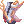 Enhanced Variant Shoes [1] with Abandoned Teddy Bear Card.
+7 Nydhorgg's Shadow Garb [1] with wakwak card and 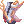 Enhanced Variant Shoes [1] with Abandoned Teddy Bear Card.
Accessory :  Broken Heart [1] STR enchanted with Gold scaraba card >
Broken Heart [1] STR enchanted with Gold scaraba card > Sura Gauntlet > Diabolus Ring [1] with Gold scaraba card
- Tips
I dont use anti break cast gear, your cast should be fast enough to proc asura strike before mobs interrupt you.
Use change as gentle touch.
Dont forget you cant asura strike right after snap, you have 2sec cooldown.
- Stats
- STR 120 (add ATK)
- AGI 1
- VIT 80 (for stun resist)
- INT 120 (more SP)
- DEX 100 (Cast time decrease)
- LUK 20 (Add some ATK for few stats point)
Tank Sura
One of the most common roles of a sura in instance is to tank the MVP, due to steel body skill that reduce every damage income per 90% for a long duration.
Stats and skill are not important for this, you just want to maximize your HP with vit and maybe get some flee with agi.
- Equipment
- Decent :
Head : 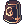 Helm Of Abyss [1] add 10% reduc to boss monter
Armor : Glorious Suit for HP pool, cheap
Shield : +7 Immune Shield [1] or  +4 Valkyrja's Shield [1 [1]] with alice card
+4 Valkyrja's Shield [1 [1]] with alice card
Garment :  +4 Cloak Of Airship [1] free 10% neutral resist, carded with raydric
+4 Cloak Of Airship [1] free 10% neutral resist, carded with raydric
Shoes : Variant Shoes for max hp, you can get it for one million zeny.
Accessory :  Glorious ring add elemental resistance, always good
Glorious ring add elemental resistance, always good
- High end (godlike) :
This stuff will basically make you feel like you are in Steel body even if you'r not :
Head : Satanic Bone Helm [1] add 5% neutral resistance
Armor : Boitata Armor [1] Best armor for tanking, add 7% neutral résistance, 5% hp and slot. With peco peco card or angeling card if you fight no-dark MVP
Shield : +9 Immune Shield [1] a +9 one will give you 9% neutral resistance. With Abysmal knight card
Garment :  +9 Heroic Backpack [1] coupled with deviling card, this garment will bring you 65% neutral resistance!!
+9 Heroic Backpack [1] coupled with deviling card, this garment will bring you 65% neutral resistance!!
Shoes : Enhanced Variant Shoes [1] with green ferus card
Accessory : Glorious ring add elemental resistance
With this stuff you reach 86% neutral resistance, add 40% reduction from alice card and 25% reduction from your 200 hard DEF.
For example if randgris give you a lvl 50 brandish spear at 10 000 base damage, you'll get 10000*(1/0.86)*(1/0.4)*(1/0.25) = 630 damage WITHOUT STEEL BODY. If you are under steel body, you'll take 630*(1-0.9)= 63 damage...
Builds
Shields
Garments
Shoes
Accessories
PvP guide
Unlike other classes, sura have a lots of builds and there is no sura who have the exact same stats, skill and playstyle than another one. The plurality of the viable gears you can wear make every sura special.
I'll give you some base to start a good build but you can always add personnal touch and make it even better.
Your build
Introduction about the build, brief summary, optional.
Stats
An example stat build goes here:
- STR 100
- AGI 100
- VIT 100
- INT 100
- DEX 100
- LUK 100
Skills
Example of an already currently laid out skill build, OR listing essential skills for the build with comments
Either text or image format.
Equipment
List of the key pieces of equipment recommended for said build.
Strategy
Explanation of the build's uses
Gameplay
Class specific tips and tricks, such as certain skill mechanics and special roles in certain environments.
For example: Warlock's spellbook mechanics and Kage/Oboro's charms, different weapon types and their uses for Rebellions
Leveling
Leveling places and tactics go here.
Recommended format:
- Lv1 - Lv30
- Name of the map & monsters
- Lv31 - Lv70
- Name of the map & monsters